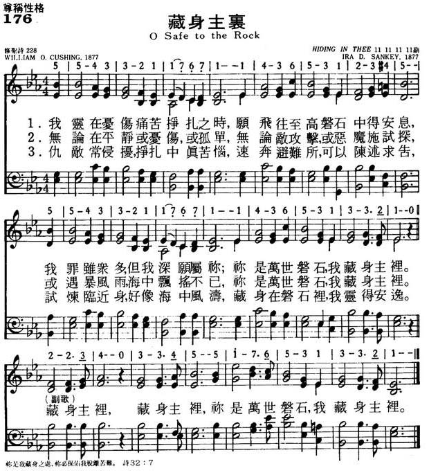

LX1838
O Safe To The Rock _Cushing
176藏身主里
-
|
|
|
|
1 O safe to the Rock that is higher than I,
My soul in its conflicts and sorrows would fly.
So sinful, so weary, Thine, Thine would I be;
Thou blest Rock of Ages, I'm hiding in Thee.
Chorus:
Hiding in Thee, Hiding in Thee,
Thou blest Rock of Ages, I'm hiding in Thee.
2 In the calm of the noontide, in sorrow's lone hour,
In times when temptation casts o'er me its power,
In the tempests of life, on its wide, heaving sea,
Thou blest Rock of Ages, I'm hiding in Thee. [Chorus]
3 How oft in the conflict, when pressed by the foe,
I have fled to my Refuge and breathed out my woe.
How often when trials like sea billows roll
Have I hidden in Thee, O Thou Rock of my soul. [Chorus]
Source: Baptist
Hymnal 2008 #452
|
176藏身主里
1.我灵在忧伤痛苦挣扎之时，
愿飞往至高磐石中得安息，
我罪虽众多，但我深愿属你；
你是万世磐石，我藏身主里。
藏身主里，藏身主里，
你是万世磐石，我藏身主里。
2.无论在平静或忧伤，或孤单，
无论敌攻击，或恶魔施试探，
或遇暴风雨，海中飘摇不已，
你是万世磐石，我藏身主里。
藏身主里，藏身主里，
你是万世磐石，我藏身主里。
3.仇敌常侵扰，挣扎中真苦恼，
速奔避难所，可以陈述求告，
试炼临近身，好像海中风涛，
藏身在磐石里，我灵得安逸。
藏身主里，藏身主里，
你是万世磐石，我藏身主里。
|
|
https://www.mred365.cn/szxg/7179.html
 |
| |
|

-
LX1838
O Safe To The Rock
176藏身主里

Tune Information
|
Title: |
HIDING IN THEE (Sankey) |
|
Composer: |
Ira David Sankey (1891) |
|
Meter: |
11.11.11.11 with refrain |
|
Incipit: |
55433 21176 71143 |
|
Key: |
F
Major |
|
Copyright: |
Public Domain |

Notes
Ira David Sankey (b.
Edinburgh, PA, 1840; d. Brooklyn, NY, 1908) composed HIDING IN THEE
(also known as SANKEY) and first published it in Welcome
Tidings (1887), compiled by Lowry, Doane (PHH
473), and Sankey. It was set to the text "O Safe to the Rock That Is
Higher than I." The four lines of HIDING IN THEE are in ABAB' form and
are accompanied by a simple harmonization that suggests part singing.
Antiphonal singing is useful if the entire psalm is sung.
When Sankey's family
moved to Newcastle, Pennsylvania, in 1857, he joined the local Methodist
church and became its choir director and Sunday school superintendent.
After the Civil War he worked for the Internal Revenue Service and
became active in the YMCA. As a delegate to the YMCA convention in
Indianapolis in 1870, he met evangelist Dwight L. Moody. After hearing
Sankey sing, Moody asked Sankey to join him as music director in his
Chicago church. Thus began their lengthy and famous association as an
evangelism team, which ministered throughout the world for some thirty
years.
Although Sankey was an
amateur musician, he became known worldwide for his gospel singing
(accompanying himself on a reed organ), his songs (especially "The
Ninety and Nine"), and as a publisher of gospel music. With various
collaborators he published the six volumes of Gospel
Hymns (1875-1891; collected in one volume, 1894), a
very successful venture. Sankey served as president of the Biglow and
Main publishing Company from 1895 until his death. Credited with
composing some one hundred gospel hymn tunes, Sankey also published his
autobiography, My Life and the Story of the Gospel
Hymns and of the Sacred Songs and Solos in 1906.
--Psalter Hymnal
Handbook, 1988
我靈在憂傷痛苦掙扎之時，
願飛往至高磐石中得安息；
我罪雖眾多，但我深願屬祢：
祢是「萬古磐石」，我藏身主�堙C
無論在平靜或憂傷孤單時，
無論受試探或遇敵攻擊時；
或暴風雨，在海中飄搖時，
祢是「萬古磐石」，我藏身主�堙C
仇敵常侵擾，掙扎中真苦惱，
速奔避難所可以陳述求告；
試煉臨近身，好像海中風濤。
藏身在萬古磐石�堙A我靈得安逸。
（副歌）
藏身主�堙A藏身主�堙A
祢是「萬古磐石」，我藏身主�堙C
基督教的退修會是離開繁忙的生活，到一清靜的場所，使自己有幾天與神親近，靈命得以增長。 地上雖有許多可隱蔽休憩之處，但真正心靈可安歇之處，是藏身主�堙C
1876年古欣（William O. Cushing, 見四月十七日）因中風後，語音不清而不能再講道，心靈上經常有痛苦的爭戰。
往日的輝煌已遠去，除了偶而有二三好友來電話寒暄，含淚渡日的生活是何其的寂寞和漫長。
一日，古欣接到孫基（Ira D. Sankey, 見九月三十日）電話，請他寫些新歌，可供傳福音之用。
這對古欣來講，是神的呼召，於是他敬虔禱告，求神賜給他可榮耀神的作品。
他自詩篇61篇的經文，獲得靈感，寫下他當時的心聲，他說：「這首詩是以多少眼淚，多少內心掙扎，和多少靈�堛漫I喊而寫成的。」
古欣逐漸地明白，神賜給他一把金琴，要他抒發內心深處所經歷的大愛，和在神隱密處的安穩，雖然當神來撥動他心弦時，是那麼地痛苦！過去他以口傳講神的話語，如今他以心來頌神的奧秘。
他在憂苦鬱悒的環境中，體會了神是他永久的磐石，和藏身在祂隱密處的寬廣和安穩。
這首詩歌由孫基譜曲。 孫基是推廣福音詩歌的功臣，他編印了許多福音詩歌集，其中有一本「聖詩及獨唱曲 」（Sacred
Songs and Solos）在50年代初，銷售了八千萬冊。
中英文聖詩集參考
英文歌名 Hiding
in Thee
頌主新歌 176
頌主新歌(中英雙語) 175
教會聖詩 52
歡欣讚美 619
聖徒詩集 360
聖詩 228
青年聖歌I 167
校園詩歌I 114
註：「歡欣讚美」詩集為英文版，原名是
Celebration Hymnal．
http://www.hymncompanions.org/Sep/16/stream.php
It is interesting to note the since the day when Augustus Toplady first gave to
the world his immortal hymn “Rock of Ages, ” many writers after him have written
similar songs with Christ as our Rock and Fortress based on Psalm 31:2.
Another hymn of like character found in many-a-hymnal, which since it was
written, has been a comfort and encouragement in times of trial and tribulation,
is this hymn:
“Oh, safe to the Rock that
is higher than I,
My soul in its conflicts and sorrows would fly;
So sinful, so weary, Thine, Thine would I would be;
Thou blest ‘Rock of Ages, ’ I’m hiding in Thee. ”
It was written in Moravia, New York, in 1876, by William O. Cushing. The author
has recorded that “Hiding inThee” was the outcome of many tears, many
heart-conflicts and soul yearnings, of which the world can know nothing. It was
written during the world-wide Moody and Sankey mission.
Mr. Cushing, whose hymns had already gained considerable reputation, received a
note from Sankey asking him to send something new to help him in his Gospel
work. “A call from such a source and such a purpose, ” says Mr. Cushing, “
seemed a call from God. I so regarded it and prayed: ‘Lord give me something
that will glorify Thee. ’ It was while thus waiting that ‘Hiding in Thee’
pressed to make itself known. ”
When Sankey received the manuscript from his friend, at once he perceived the
usefulness of the hymn, and wrote a tune for its text, to which it has since
been sung: a composition which, in no small measure, has contributed to the
popularity of this hymn.
William O. Cushing was born at Hingham, Massachusetts, on December 31, 1823. He
is also the author of several well-known hymns, including: “Jesus knows thy
sorrow, ” “ Follow on! ” “Ring the bells of Heaven, ”and the children’s hymn,
“When He cometh, He cometh. ”
https://www.hymnal.net/en/hymn/h/566